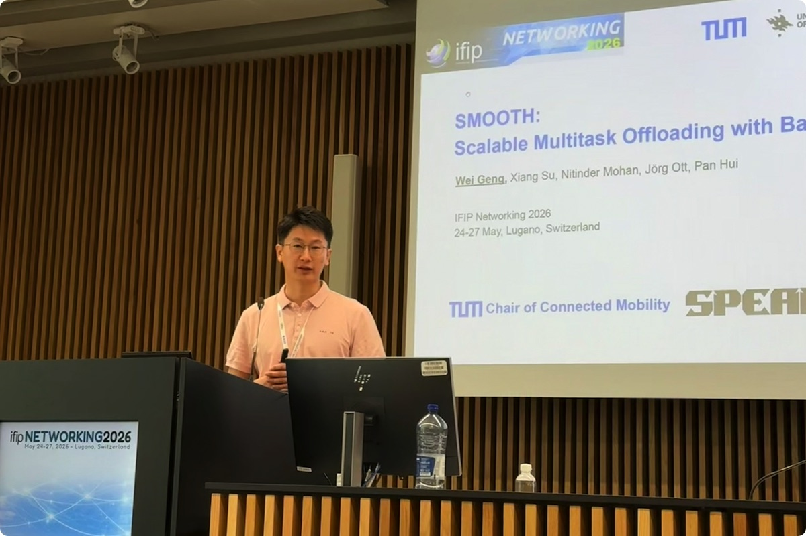
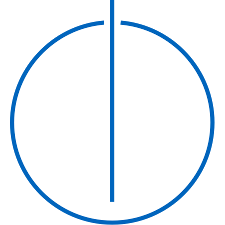

Wei GENG
📰 Recent News
- Jun 2026
- Our workshop paper "Budget-Adaptive Routing: Skipping the Weak When the Strong Answers Anyway" accepted at workshop NAIC 2026 (SIGCOMM 2026)! 🎉
- May 2026
- I gave a talk on our paper "SMOOTH: Scalable Multitask Offloading with Backbone Sharing" at IFIP Networking 2026 in Lugano, Switzerland🇨🇭.

- Apr 2026
- I will attend Future Computing and Networking (FCN 2026) and TU Delft & TU Munich Joint Doctoral Seminar in Delft 🇳🇱 🚀
- Apr 2026
- Our full paper "SMOOTH: Scalable Multitask Offloading with Backbone Sharing" accepted at IFIP Networking 2026! 🎉
- Oct 2025
- Our poster paper "KUT: Towards Lightweight On-path Network Assessment for Edge Orchestration" accepted at CoNEXT 2025 🇭🇰 🎉
- Oct 2024
- Started Ph.D. at TUM Chair of Connected Mobility
- Mar 2024
- Visiting Technical University of Munich
- Jan 2024
- Visiting Politecnico di Milano
- Sep 2023
- Honored to be selected to receive an ACM Travel Grant and an RBM Research Travel Grant.
- Aug 2023
- Glad to become a reviewer for ACM ICN 2023 Poster and Demo Track.
- Aug 2023
- We got an accepted paper in ACM ICN 2023
📄 Short Bio
I am a doctoral researcher & Ph.D. candidate supervised by Prof. Dr.-Ing. Jörg Ott at Chair of Connected Mobility, TUM. I am also a member of SPEAR Lab, TU Delft led by Prof. Nitinder Mohan, mentored by Prof. Dirk Kutscher at HKUST(GZ). My current research interests lie in Accelerating Networked Systems by Edge Computing, such as visual perception pipelines.
I obtained my M.Phil. degree from HKUST(GZ), where I was luckily advised by Prof. Pan Hui, Prof. Gareth Tyson, and Prof. Dirk Kutscher. Previously, I was a full-time research engineer focusing 5G core network performance optimization at Huawei and lucky to work with Mr. Jing Liu, Dr. Wei Wang, and Dr. Sui Zhou. I obtained my M.Eng and B.Eng from Fudan University and Harbin Engineering University respectively. I interned at Alipay and eBay.
💻 Research Interests & Pubs
Edge Computing and Networked Systems
- Efficiency, Scalability, Cost Optimization of Edge Systems [IFIP Net'26-SMOOTH] [[BeyondAcc Under Review]]
- Networking for Edge Computing [CoNext'25-Poster-KUT] [ICN'23-SoK]
- Selective Task offloading in edge-cloud continuum. [SIGCOMM-NAIC'26-Bgt-ada] [WIP-ASIDE]
- Sustainability (Energy Efficiency) of Edge Systems [Horizon Europe Project - CIRES]
- Golang runtime scheduler & OS kernel optimization
🔬 Research Projects
- Horizon Europe Project - Resilient Edge Systems for Critical infrastructure and Urban Environments
🎤 Talks & Presentations
- Budget-Adaptive Routing — NAIC @ ACM SIGCOMM 2026, Denver, CO, USA (upcoming)
- SMOOTH — IFIP Networking 2026, Lugano, Switzerland
- TU Munich & Delft Joint Seminar — Delft, Netherlands
- KUT (poster) — ACM CoNEXT 2025, Hong Kong SAR
- SoK: Distributed Computing in ICN — ACM ICN 2023, Reykjavík, Iceland
🧑🏫 Teaching & Supervision
I teach and supervise at the Chair of Connected Mobility, TUM. Full details on the Teaching & Supervision page.
- Courses @TUM — Networked AI Systems (seminar) · Edge Computing & IoT (practical) · Hot Topics in Edge Computing (seminar)
- Supervision — ongoing students & completed theses, plus open topics
- Prospective students — I supervise BSc/MSc theses, guided research & internships. Feel free to email me.
- Certification — Certificate in Higher Education Teaching, Bavaria (Advanced Level) — ProLehre | Media and Didactics, 2024
🤝 Academic Service
Program Committees & Reviewing
- EuroSys 2026 — Artifact Evaluation Committee · Shadow TPC
- ACM IMC 2025 — Shadow TPC
- ACM ICN 2023 — Program Committee (Poster & Demo Track)
- IEEE VRW 2023 — Program Committee
Professional Membership
- Student Member, IEEE and ACM
💼 Working Experience
- Huawei Technologies - 5G and High Performance Computing, Shanghai, 2020~2022.
Ant Group - Intern in Cloud Computing, Hangzhou, Summer, 2019
 eBay - Intern in Big Data and Distributed Systems, Shanghai, Winter, 2018
eBay - Intern in Big Data and Distributed Systems, Shanghai, Winter, 2018
🎓 Education
- Ph.D. Student -

CIT, Technical University of Munich, Munich, Germany - 2024.10~ - Lab Member SPEAR Lab, TU Delft, Delft, Netherlands - 2024.10~
- M.Phil. - The Hong Kong University of Science and Technology, Guangzhou, China - 2022.9~2024.10
- M.Eng. - Fudan University, Shanghai, China - 2017~2020
- B.Eng. - Harbin Engineering University, Harbin, China - 2013~2017
- Visiting Student - Politecnico di Milano, Milan, Italy - 2023.3
🏸 Hobbies
- Sports: Basketball, Badminton, Ping-pong, Gym.
- Open Source
- A set of extensions I wrote for Raycast can be found here
- Pen Calligraphy